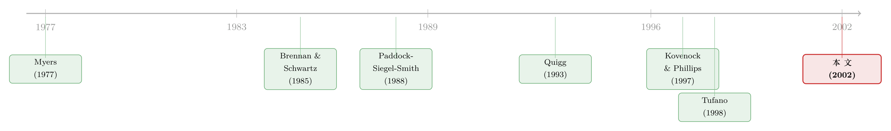

一座金矿什么时候关门？——把「实物期权」拖到现实里逐年对账
本文读的是 Moel & Tufano (2002, Review of Financial Studies)：他们用 1988–1997 年 285 座北美金矿逐年的开/关记录，第一次把 Brennan-Schwartz 的实物期权模型「拖」到真实的开关决策上对账，发现矿山开关确实大体服从实物期权的预测——尤其是金价波动率显著地影响关停，这正是简单 DCF 法则无法解释的；但要不要真的关一座矿，还要看一层模型里没有的管理层与公司层面的因素。
1 一个被讲了二十五年、却从没被「验过」的故事
先说一个让人略感尴尬的事实。
在过去四分之一个世纪里，实物期权 (real options) 大概是公司金融里被谈得最多、却被验得最少的题目之一。从 Myers (1977) 第一次把「增长机会其实是一份期权」写进资本结构，到 Kester (1984) 把它讲给经理人听，再到 Brennan and Schwartz (1985a) 给出可以真正算出来的定价框架，理论这一侧早已枝繁叶茂——Dixit and Pindyck (1994)、Trigeorgis (1996) 这些教科书几乎把这套语言固化成了行业常识：投资不是一道「现在算 NPV、正就上」的静态题，而是一份「可以等、可以反悔、可以分步走」的期权，不确定性越大，等待越值钱。
可问题是：现实里的经理人，真的是这么干的吗？
这才是 Moel 和 Tufano 想较的那个真。理论说得再漂亮，如果打开真实世界的账本，公司该关的项目没关、该等的时候不等，那这套「期权」就只是一种事后讲得通的修辞。实证研究在这条线上，落后理论太远了。 此前能找到的，无非是 Paddock, Siegel, and Smith (1988) 把模型套到海上石油租约上算个估值，或者 Quigg (1993)、Berger, Ofek, and Swary (1996)、Davis (1996) 从资产价格里「反推」出期权溢价的影子——它们验的都是「价格里有没有期权的痕迹」，而不是「人有没有像期权模型说的那样去行权」。
于是一个自然的问题是：到哪里去找一个能直接看见「行权」这个动作的场景？
作者给的答案，干净得近乎奢侈：金矿的开门与关门。
为什么是金矿？因为开矿、关矿是离散的、可观测的、并且经济意义重大的事件——一座矿这一年是开着还是关着，白纸黑字写在矿业年鉴里，不像「公司有没有放弃一个模糊的增长机会」那样只能靠猜。更妙的是，金矿天然就是 Brennan and Schwartz (1985a) 那个经典模型里的主角：一座矿可以处在三种状态——开 (open)、暂时关停 (temporarily shut)、永久弃置 (abandoned)——经理人盯着金价这个外生的随机过程，决定什么时候把灯关掉、什么时候再把灯打开。金价是公开的，波动率是可算的，成本结构是可估的。一个教科书里的期权模型，第一次有了一张可以逐年对账的真实账本。
2 模型：两道门槛，和一条会「卡住」的金价
要验一个模型，得先把它的预测掰开来摆清楚。这一节，我们顺着 Brennan and Schwartz (1985a) 走一遍——它是整篇文章预测的来源。
设金价 \(S_t\) 服从某个随机过程。一座矿的经理人面对三件事：开着要付边际生产成本，关着要付维护成本（mothballing cost），而开↔关之间的来回切换，本身要付一笔开关成本（重新配置设备、遣散或召回工人）。正是这笔切换成本，让最优决策不再是「金价一跌破盈亏平衡点就关」这么简单。
Brennan-Schwartz 的解，可以浓缩成两道门槛价格：
$$ \text{operating mine closes when } S_t < s_1, \qquad \text{closed mine reopens when } S_t > s_2, \qquad s_2 > s_1 . $$
注意 \(s_2 > s_1\) 这个不等式——它是整个故事的灵魂。如果没有开关成本，两道门槛会重合，经理人会在同一个价位上反复横跳。但因为来回切换要花钱，最优策略就留出了一条[\(s_1, s_2\)] 的「按兵不动」区间：金价掉进这条带子里，开着的矿懒得关，关着的矿懒得开。这就是实物期权特有的滞后 (hysteresis)。
接着，一个自然的问题是：这条带子的宽窄，由什么决定？
这里藏着全文最关键的一根弦——波动率。当金价波动率 \(\sigma\) 上升，「再等等看」这个期权变得更值钱，于是经理人更不愿意为切换付费：\(s_1\) 往下走（开着的矿更舍不得关），\(s_2\) 往上走（关着的矿更舍不得开），整条带子被撑宽。用作者能直接观测的概率语言来说：
$$ \frac{\partial}{\partial \sigma}\, \Pr(\text{open stays open}) > 0, \qquad \frac{\partial}{\partial \sigma}\, \Pr(\text{closed reopens}) < 0 . $$
为什么这一步是「真正关键的一步」？因为它给了作者一把能把实物期权和它最强劲的对手区分开的刀。那个对手叫「动态 DCF」：每一期都重新算一次静态 NPV，正就开、负就关。在动态 DCF 里，波动率根本不进决策——折现的是期望现金流，方差不影响一阶条件。所以，只要在真实数据里看到波动率显著地影响开关，就等于给实物期权投了一票、给简单 DCF 投了反对票。整篇实证的「胜负手」，就压在波动率这一个变量上。
把模型的全部可检验含义列出来，就是七条比较静态：当先前状态为「开」、金价更高、波动率更高、运营成本更低、关停/重开成本更高、维护成本更低、储量更大时，一座矿在当年「开着」的概率更高（开着的矿和关着的矿，符号有时相反）。作者把它们整整齐齐地汇成了一张预测表（论文 Table 1 Panel A）——这张表，就是后面所有回归要去核对的「标准答案」。
把实物期权和 DCF 对立起来看，是这篇文章最聪明的设计：它没有去验「期权值多少钱」这种容易陷入联合假设的问题，而是去验「一个在 DCF 里本不该出现的变量（波动率），到底显不显著」。一个干净的、可证伪的检验。（关于「等待的期权」在竞争与博弈下会怎样变形，可参见《对手就在隔壁磨刀，你还敢「再等等」吗？》与《竞争越激烈，反而越要「等」？》。）
3 数据：把一座矿的成本，拆成「固定」和「边际」两半
模型这一侧讲完了，但真正的难点在数据这一侧——而且难在一个容易被忽略的地方。
作者从《矿业年鉴》(Mining Journal) 的年度普查和 Metallica 2000 数据库出发，构造了一份覆盖 1988–1997 年北美金矿活动的新数据库。为了不被幸存者偏差污染，他们专门补回了 1997 年永久关停、可能从数据库里消失的矿，并对 1997 年（关停大量发生的一年）逐矿手工补全。最后的样本是 285 座 在 1988–1997 年间某个时点处于运营状态、且数据齐备的北美金矿（总库 349 座，64 座因数据不足剔除）。
这份账本本身就很会讲故事：285 座矿里，213 座（75%） 至少关停过一次；其中 26 座 在关停后又重新开张。作者按公司公告的理由把关停分了类——86 起是「经济性」关停（明说因金价过低），79 起是储量采尽，11 起是水文地质（透水、塌方），3 起罢工，3 起环保，44 起未说明；重开里 10 起是「经济性」重开（金价回升）。这 86 起经济性关停和 10 起经济性重开，才是实物期权模型真正该解释的「主动行权」。
但这里有一道坎，是整篇文章在数据上最花力气的地方。
实物期权模型要的输入，是一座矿的边际成本和固定成本——开着的矿付边际成本，关停的矿付固定（维护）成本，二者驱动着两道门槛。可现实中能拿到的，只有一个混在一起的平均现金成本 \(c\)。怎么把这一个数，拆成固定和边际两半？
作者借鉴矿产经济学的做法，设定了这样一个成本函数（论文 Equation 1，对 917 个矿-年观测做 OLS）：
左边的 \(c\,q\) 是总现金成本（平均成本 \(c\) 乘以年产量 \(q\)）。这个回归一跑，固定项 \(\beta\) 就是「跟产量无关」的那部分（近似地，就是关停一座矿仍要付的维护成本），边际项 \(\gamma\) 就是每多产一盎司金子的变动成本。
结果相当符合矿产经济学的「老常识」，量级也讲得清楚：基础固定成本约 130 万美元，并随储量每盎司上升约 2.4 美元——也就是说，一座握有两百万盎司黄金的矿，固定成本约 620 万美元/年。边际成本则呈现出漂亮的异质性：最小的露天矿高达 265 美元/盎司，而最大的深井矿降到约 142 美元/盎司；露天矿的变动成本系统性高于井下矿，且随储量增大而下降——全部与矿产工程的先验一致。这个 \(R^2\) 高到 0.94–0.97，说明这套线性近似抓住了成本结构的绝大部分。作者用含矿固定效应的那一列（Table 3 Column D）去给样本里每一座矿预测固定与边际成本，再喂进开关决策的判别模型。
这一步是整篇文章方法论上最关键、也最脆弱的环节：关停成本、重开成本、维护成本，作者并没有直接数据，而是靠矿业工程师给的「成本与资本化建设成本、与技术类型成正比」的粗略估计来代理（用技术虚拟变量、资本化成本去近似）。换句话说，模型最讲究的几个成本参数，本质上是「估出来的估计量」。后面所有比较静态检验，都建立在这层代理之上。
4 主要结果：模型对了，但只对了一半
把预测表和数据摆到一起对账，结论可以分成相辅相成的两层。
第一层，实物期权模型「赢了」。 作者用判别选择模型 (discrete choice model, 参见 Maddala 1983) 估计一座矿在某年「开着」的概率，把先前状态、金价、波动率、运营成本、各项开关与维护成本逐一放进去。Table 1 Panel A 里那张「标准答案」被强烈地验证：先前开着的矿更可能继续开着、先前关着的更可能继续关着（滞后是真的）；金价越高越倾向于开；成本越高越倾向于关。而最要命的那个变量——金价波动率——确实显著、且方向与实物期权一致：波动越大，开着的矿越舍不得关。前面说过，这正是动态 DCF 永远给不出的预测。模型在「描述矿山何时开、何时关」这件事上，是个有用的描述者。
但真正关键的一步，是作者没有就此打住。
实物期权模型是一个「简约式 (reduced form)」模型——任何让人「按兵不动」的非经济因素，原则上都能被重新打包成模型里的一笔「关停成本」。这话听着像是模型的护身符，其实是它的软肋：如果什么都能被解释成「成本」，那模型就什么都没排除。于是作者在第 4 节做了一件更诚实的事：把那些实物期权模型本不考虑的管理层因素，单独拎出来，看它们是否在金价、波动率之外还独立地影响关停决策。
第二层，反转出现了。 要不要真的关一座矿，确实还系于一批模型外的因素：
- 组合效应（单矿 vs 多矿公司）：一家公司是只有这一座矿，还是有一整个矿山组合？组合里其他矿的成本、本矿储量占公司储量的比重、公司整体的资产回报率与规模，都会影响这座矿的关停概率。一座矿对一家「单矿公司」是全部身家，对一家「多矿巨头」只是组合里的一格——它们的关停逻辑不该一样，数据也确认了它们不一样。
- 协调成本（所有权结构）：一座矿有几个共同所有者、最大所有者占多少、所有权的赫芬达尔集中度——所有者越多、越分散，关停越难协调。
- 利益相关者/社区关切：矿是否就坐落在最大所有者总部所在的州（国）？「家门口」的矿，关起来要顾及的东西更多。
这一层的含义很微妙：模型对了，但它对的是「平均意义上的经济逻辑」；而一座具体的矿到底关不关，还要看谁拥有它、它在公司里占多重、关掉它会得罪谁。实物期权给了骨架，管理层与公司治理因素填上了血肉。
一个有意思的旁证：作者对其中 27 座能精确定位关停公告日的经济性关停做了事件研究，两日窗口的异常收益只有 −0.6%，且统计上与零无异。要么这些关停早被投资者预期到了，要么单座矿对公司价值的贡献本就不大。作者很克制地提醒：样本太小，别过度解读。
5 文献脉络：实物期权这条线，是怎么从「理论」走到「对账」的
把镜头拉远，这篇文章在整条研究线里的位置就清楚了。
起点是 Myers (1977)——他第一次说「公司的价值里，有一部分是还没行使的增长期权」，把期权思维带进公司金融。Kester (1984) 把它通俗化、推给实务界。真正让它「可计算」的，是 Brennan and Schwartz (1985a)：他们把开关一座矿写成一个随机最优控制问题，用「矿等价于一篮子可交易债权」的复制思想给出定价，并自陈要「为实证研究提供一组丰富的预测」——这篇文章，就是去兑现那句承诺的。

理论这一侧很快繁荣：Dixit (1989) 从进入/退出决策的角度给出了与 Brennan-Schwartz 在数学上等价的刻画，Pindyck (1980)、Dixit and Pindyck (1994) 把不可逆投资与不确定性铸成了一套通用语言。但实证这一侧一直瘸腿：Paddock, Siegel, and Smith (1988) 把模型套到海上石油租约估值，Quigg (1993)、Berger, Ofek, and Swary (1996)、Davis (1996) 从资产价格里找期权的痕迹，Tufano (1998) 则证明实物期权能解释金矿公司的风险暴露。这些都在验「价格」，没人去验「行为」。
与本文最近的，是 Kovenock and Phillips (1997)——他们用厂级数据研究 10 个行业的关厂决策。但他们关心的是战略互动如何影响退出，而 Moel-Tufano 要的是纯粹由商品价格波动驱动的关停期权。同期 Slade (2000) 对 21 座加拿大铜矿做了相关研究。本文的独特位置在于：它是少有的、直接观测「行权动作」本身、并把实物期权与动态 DCF 摆上同一张擂台去逐年对账的实证工作。
6 评论与延伸（Q&A + 研究方向）
(a) 几个可能的疑问
Q：这不就是「价格高就开、价格低就关」吗？凭什么说证明了实物期权，而不是普通 NPV？
区别全在波动率。普通（动态）DCF 里方差不进决策，只有期望现金流的折现值说了算；而实物期权预测波动率会显著影响开关，且方向明确（波动越大越不愿切换）。作者在真实数据里看到波动率显著，这是 DCF 解释不了的，所以这一项才是分水岭，而不是金价水平本身。
Q：成本结构是估出来的，关停/重开成本甚至是工程师「拍」出来的，结论还可信吗？
这是最实在的担忧。固定/边际成本来自一个 \(R^2\) 高达 0.94–0.97 的成本函数回归，相对可靠；但开关成本、维护成本确实只有粗代理（技术虚拟变量、资本化成本）。好在核心检验压在金价与波动率这两个外生、可观测的变量上，它们不依赖那层脆弱的成本代理——这让主结论比看上去更稳。
Q：75% 的矿都关停过，会不会很多其实是储量采尽，被错算成「经济性行权」了？
作者已经按公告理由把关停分了类，单独标出 86 起「经济性」关停和 10 起「经济性」重开，正是为了把储量采尽（79 起）、水文地质（11 起）这些非期权性的退出剔开。真正喂给实物期权检验的，是这部分「主动、可逆」的关停。
Q：第 4 节说管理层因素也重要，这是不是反而推翻了实物期权？
不是推翻，是补全。实物期权是简约式模型，任何「非经济」的犹豫都能被重新表述成一笔「关停成本」。作者的贡献恰恰是承认这一点，并把单矿/多矿、所有权集中度、社区关切等因素显式拎出来，证明它们在金价、波动率之外独立地起作用。模型是骨架，治理因素是血肉。
Q：那个 −0.6%、不显著的事件研究，是不是说明关停其实没价值？
更可能是两件事之一：关停早被市场预期（公告无新信息），或单座矿对公司整体价值贡献本就有限。样本只有 27 个，作者自己也强调不要过度解读。它不否定关停的实物期权价值，只是说「关停公告」这个时点上没看到显著的财富效应。
Q：金矿能行权得这么干脆，是不是因为金价特别「干净」？这套结论能外推到别的资产吗？
正是。金价公开、连续、外生，关/开离散可观测——这是一个近乎实验室的场景。换成生产决策更黏、价格更受自身产量影响、退出还掺杂战略博弈的行业（如 Kovenock-Phillips 研究的制造业），行权会被这些摩擦「糊」掉，实物期权的纯净预测会更难被识别出来。
(b) 几个可能的研究问题与提案
1. 把「金矿式对账」搬到公司债的赎回/违约期权上
【经济故事】公司债同时嵌着发行人的可赎回期权和股东的违约（弃置）期权，结构上几乎就是 Brennan-Schwartz 的「开/关/弃」三状态翻版，只是标的从金价换成了公司资产价值与利率。波动率本不该进「按 NPV 决定要不要赎回」的简单法则，但实物期权预测它会显著影响赎回与违约的时点。 【可行性】中。赎回/违约是离散可观测事件，TRACE + Mergent FISD 能拿到逐券的赎回日与违约日，资产波动率可由股权信息反推。难点与本文同源：维护成本、再融资成本只能代理。识别上可用利率/资产波动率的外生变动做比较静态。
2. 外资持有人会不会改变实物期权的行权门槛？
【经济故事】本文第 4 节已经发现所有权集中度、协调成本影响关停。一个自然延伸：当一家自然资源公司的股东里外资比例上升，关停/重开这类「得罪本地社区」的行权会变得更容易还是更难？外资可能更看重纯经济性、更少受本地利益相关者牵制，从而让行权更贴近实物期权的理论门槛。 【可行性】中。需要矿山/工厂级的开关记录 + 公司层面的外资持股（FactSet/13F 或各国持股披露）。识别可借指数纳入、可投资度 (investability) 改革等外生冲击。诚实地说，找到「开关记录」这种厂级面板是最大瓶颈。
3. 流动性紧张时，企业会不会「该关不关」？
【经济故事】实物期权门槛假设企业能自由承担开关成本。但若企业正被融资约束卡住，关停（要付遣散）或重开（要付重启资本）可能因为「现在拿不出这笔现金」而被推迟——观测到的行权会系统性偏离无约束门槛。 【可行性】中高。把本文的判别模型加一个融资约束代理（现金、信用额度动用、利差），看它是否在金价、波动率之外独立地推迟行权。数据上沿用资源行业的厂级面板即可，识别可用信用市场的外生收紧（如评级临界、央行操作）。
4. 把竞争对手装进门槛：行业层面的「集体观望」
【经济故事】Brennan-Schwartz 假设单个矿对金价是价格接受者。但在集中度更高的金属（如某些铜、镍矿区），一座大矿的关停会影响价格预期，从而改变所有人的门槛——这正是 option-exercise-games 与《对手越多，价格越疯》关心的博弈维度。 【可行性】低-中。需要把矿区结构、对手产能纳入模型，识别博弈型门槛远比单矿比较静态难，且金这种近乎完全竞争的市场不适用，得换到集中度高的金属，数据更稀缺。
7 我的判断
先说贡献。这篇文章的真正价值不在于「又验证了一个模型」，而在于它选对了一个几乎是实验室级别的场景——离散、可观测、价格外生——把一个被谈了二十五年却始终验不动的理论，第一次拉到「逐年逐矿对账」的层面。更难得的是它的诚实：作者没有满足于「模型显著、收工」，而是主动去问「除了期权逻辑，还有什么在起作用」，并干净利落地展示了管理层与治理因素的独立贡献。把实物期权与动态 DCF 摆上同一张擂台、用波动率这一个变量分胜负，是方法论上极漂亮的一招。
对识别的担忧，集中在成本这一侧。固定/边际成本好歹有个高 \(R^2\) 的回归撑着，但开关成本、维护成本本质上是「工程师拍出来、再被模型当真」的代理量。由于实物期权是简约式的，任何说不清的犹豫都能被吸收进「关停成本」里——这意味着第 4 节那些管理层因素「显著」，到底是真实的治理机制，还是只是被错估的成本参数在残差里的投影，二者很难彻底分清。此外，幸存者偏差虽被作者努力补救，但 1988–1997 恰好覆盖了一段金价相对温和的时期，样本里真正极端的波动并不多，波动率检验的功效可能被低估。
后续我最想看到的，是把这套「对账」搬进信用市场。公司债的可赎回与违约，几乎就是金矿三状态模型换了个标的，而且数据（TRACE、FISD）远比矿山账本好拿。如果能在那里同样看到「波动率独立地推迟行权」，并进一步检验融资约束如何让企业「该关不关」，实物期权理论就不只是描述了一座矿什么时候关门，而是真正成了理解公司层面所有「可逆、可等待」决策的通用语言。
参考文献
- Berger, P., Ofek, E., and Swary, I. (1996). Investor Valuation of the Abandonment Option. Journal of Financial Economics 42, 257–287.
- Brennan, M., and Schwartz, E. (1985a). Evaluating Natural Resource Investments. Journal of Business 58, 135–157.
- Davis, G. A. (1996). Option Premiums in Mineral Asset Pricing: Are They Important? Land Economics 72, 167–186.
- Dixit, A. K. (1989). Entry and Exit Decisions Under Uncertainty. Journal of Political Economy 97, 620–638.
- Dixit, A. K., and Pindyck, R. S. (1994). Investment Under Uncertainty. Princeton University Press.
- Kester, W. C. (1984). Today's Options for Tomorrow's Growth. Harvard Business Review 62, 153–160.
- Kovenock, D., and Phillips, G. M. (1997). Capital Structure and Product Market Behavior: An Examination of Plant Exit and Investment Decisions. Review of Financial Studies 10, 767–804.
- Maddala, G. S. (1983). Limited Dependent and Qualitative Variables in Analysis. Cambridge University Press.
- Myers, S. C. (1977). The Determinants of Corporate Borrowing. Journal of Financial Economics 5, 147–175.
- Paddock, J., Siegel, D., and Smith, J. (1988). Option Valuation of Claims on Physical Assets: The Case of Offshore Petroleum Leases. Quarterly Journal of Economics 103, 479–508.
- Pindyck, R. S. (1980). Uncertainty and Exhaustible Resource Markets. Journal of Political Economy 88, 1203–1225.
- Quigg, L. (1993). Empirical Testing of Real Option-Pricing Models. Journal of Finance 48, 621–640.
- Tufano, P. (1998). The Determinants of Stock Price Exposures: Financial Engineering and the Gold Mining Industry. Journal of Finance 53, 1015–1052.